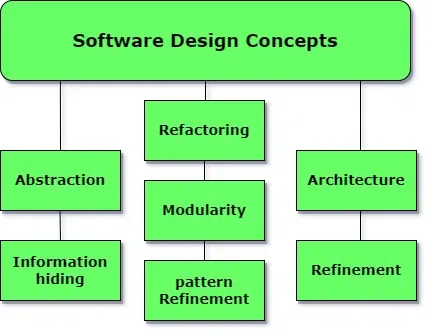
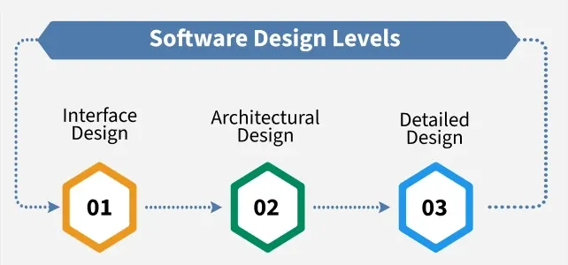

5.1 Basic Concept of Software Design
Software design is the phase of the SDLC in which approved requirements from the SRS are transformed into a structure suitable for implementation in a programming language. It is often described as the most creative phase of software development, because here the team decides how the problem will be solved — not merely what the system must do.
The input to the design phase is the SRS document; the primary output is the Software Design Description (SDD), also called the design document, which explains how the system will perform its required functionality.

SRS → Design → SDD
- SRS (input): Describes what the system must do — functional and non-functional requirements, constraints, and acceptance criteria — without prescribing internal implementation.
- Design (process): Chooses overall architecture, module structure, algorithms, data structures, and interfaces that satisfy the SRS.
- SDD (output): Documents the chosen design so developers can code, testers can plan tests, and maintainers can understand the system structure.
Characteristics of a good SDD
- Complete w.r.t. SRS: The SDD must address every requirement stated in the SRS — no approved requirement should be left without a design decision.
- Readable and maintainable: The document must be easy to understand and update as the project evolves.
- Covers all domains: A good SDD describes the data domain (what data exists and how it is stored), the functional domain (what processing occurs), and the behavioural domain (how the system responds to events and state changes).
Conceptual design vs technical design
Design is often described as a two-part iterative process:
- Conceptual design: Tells the customer and stakeholders what the system will do at a high level — focused on user-visible behaviour and system boundaries.
- Technical design: Tells the builders what hardware, software, modules, data structures, and algorithms are needed to implement the solution.
Conceptual design items include hardware components, software component hierarchy, software architecture, network architecture, data structures, data flow, I/O components, and user interfaces.

Three levels of design (overview)
- Interface design: Specifies interaction between the system and its environment; the system is treated as a black box — only inputs and outputs matter.
- Architectural design: Identifies major modules, their responsibilities, and how they communicate; internal module details are ignored.
- Detailed (low-level) design: Specifies internal elements of every module — algorithms, data structures, control flow, and interfaces between units.
These three levels are covered in detail in §5.2 and §5.5.
Design in the SDLC context
- Design follows requirements engineering (Topic 4) and precedes coding and testing.
- Overall architecture and algorithmic strategy are chosen during design, with attention to coupling and cohesion between modules (see §5.10).
- Poor design is expensive to fix later — errors found during design cost far less to correct than errors found during coding or maintenance.
Q: Define software design. What are the inputs and outputs of the design phase? List characteristics of a good SDD.
Model answer points:
- Define design as transforming SRS requirements into an implementable structure (SDD).
- Input = SRS; output = SDD (software design description).
- Good SDD: complete w.r.t. SRS, readable/maintainable, covers data/functional/behavioural domains.
- Name three design levels: interface, architectural, detailed.
- Distinguish conceptual design (what for customer) from technical design (how for builders).